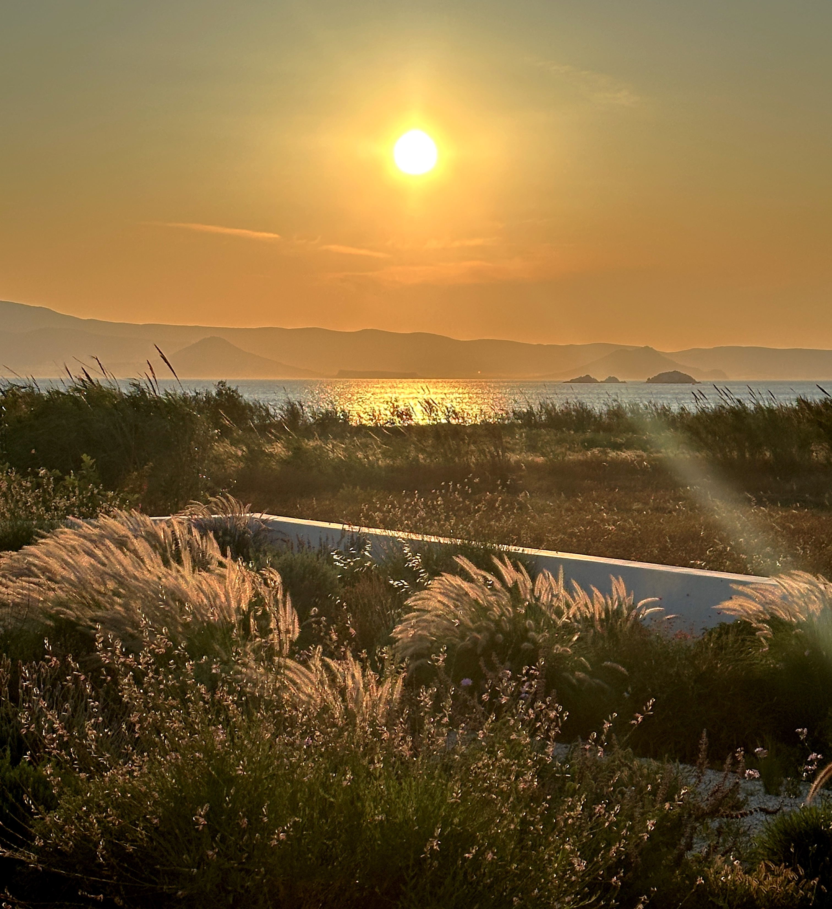

The Villa
Surrounded by the most beautiful beaches on the west coast of Naxos, Villa Aura is located in the idyllic village of Kastraki, just 60 meters from the long white sandy beach and away from the tourist hotspots.
Newly built in 2023, Villa Aura combines the clean, modern style of the Cyclades with the highest level of comfort. It has three bright bedrooms with comfortable beds, two elegant bathrooms with rain showers, a spacious living room with dining area, and an open-plan, fully equipped designer kitchen. Thanks to three large pergolas, you can find shade and relaxation at any time of day. Private parking, fast Starlink internet, and a Weber grill are also at your disposal. The house is ideal for families or groups of up to six people.
The spacious outdoor area is a true oasis: a well-tended garden with over two hundred Mediterranean plants and herbs, which you are welcome to harvest, surrounds the house. From here, you can enjoy an unobstructed view of the sea and the island of Paros – an unforgettable experience, especially at sunset. The large sun terrace offers plenty of space for relaxing and dining outdoors, while the 32-square-meter pool with a massage jet provides refreshment and is cleaned twice a week by professional staff. Next to the pool is a spacious outdoor shower, and the covered dining area can seat up to ten people. The two terraces on the upper floor, one of which is fully covered and sheltered from the wind, feature a cozy seating area with panoramic sea views, inviting you to relax. Also on the upper floor is the spacious master bedroom with a large panoramic window and sea view. As the sun sinks into the sea, the sky above Villa Aura transforms into a sparkling sea of millions of stars - a moment you will never forget.
A small sandy path leads directly from the house to Kastraki beach, which is only 60 meters away. The fine, light-colored sand and shallow, crystal-clear blue water make it ideal for children. Here you can swim, build sandcastles, or simply enjoy the gentle sound of the Aegean Sea. There are several traditional taverns within walking distance, and bakeries and supermarkets are just a few minutes away by car. The famous beaches of Alyko and Hawaii Beach are about ten minutes away, and the town of Naxos can be reached in around 20 to 25 minutes. The “Ride with the Gods” surf station, which offers kite and surf lessons, is only about a ten-minute walk on the beach away.
